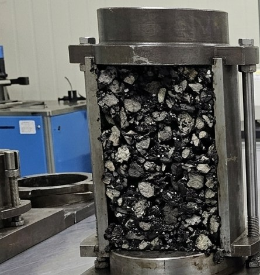
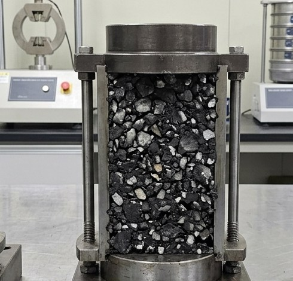
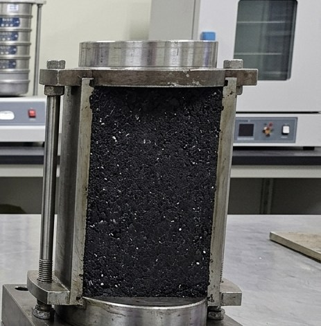
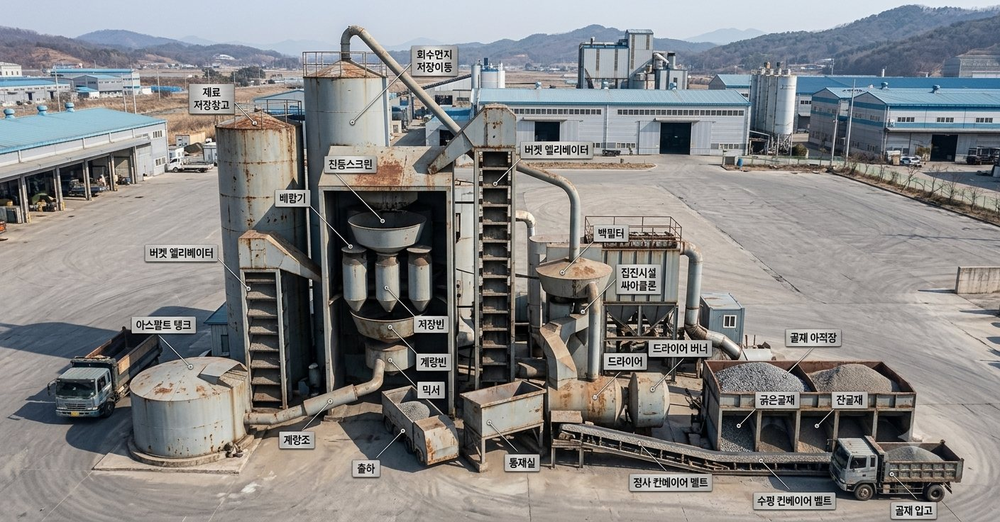

아스팔트 포장의 구성 및 종류
표층Surface Course · 약 5cm
밀실한 입도로 미끄럼을 방지하고 빗물 침투를 차단합니다. 차량 타이어가 직접 닿는 층으로, 높은 평탄성과 소음 저감 효과도 있습니다.
중층Binder Course · 약 5~10cm
전단응력을 완화하고 하중을 하부 기층에 고르게 전달합니다. 프라임 코트·택 코트로 상·하부 층을 단단히 접착시킵니다.
기층Base Course · 약 10~15cm
굵은 골재를 사용해 도로 전체의 휨 저항력과 하중을 지지하는, 포장 구조의 뼈대가 되는 층입니다.
보조기층Subbase Course
상부 하중을 노상으로 분산시키고, 쇄석·자갈 층으로 지지력 확보와 배수 기능을 함께 수행합니다.
동상방지층Anti-Frost Layer
자갈·모래를 사용해 겨울철 지반이 얼어 솟아오르는 동상 현상을 차단합니다.
노상 / 원지반Subgrade
다져진 최하부 토사 지반으로, 도로의 최종 하중을 지지합니다.
아스팔트 혼합물 종류

가열아스팔트 혼합물 HMA
신규 골재 및 버진 아스팔트를 사용합니다.

순환아스팔트 혼합물 RMA
RAP(재생골재) 30%를 혼입합니다.

특수아스팔트 혼합물 SMA
높은 내구성 및 소성변형 저항성을 갖췄습니다.
특수 콘크리트 제품

칼라콘 Color Concrete
다양한 색상 구현이 가능한 컬러 콘크리트 제품입니다.

투수콘 Permeable Concrete
빗물이 지면으로 스며들도록 만든 투수성 콘크리트 제품입니다.
층별 시편으로 보는 포장 구조

아스팔트 기층 Base Course
최대 골재 크기 25~40mm, 높은 공극률.

아스팔트 중층 Intermediate Course
최대 골재 크기 19~25mm, 하중 분산층.

아스팔트 표층 Surface Course
최대 골재 크기 13mm 이하, 치밀하고 매끄러운 마감.
아스콘 생산 공정
